反转的时刻
- 只要看到反转走势，不要介意开始的最高点或者最低点。如果前面的两段走势幅度很大，要注意是否走出想对幅度走势。
- 要注意当前走势和前面走势花的时间，而它是否在前面走势的范围以内。
===========================================================================================================
- 第一浪的确定。如果出现了上涨后，下跌，创新低，或者下跌后，创新高。那么未来如果确定这个是第一浪，那么
它的幅度就可以确定是多大了。是从底部或者顶部开始，然后出现了转折。这个就是第一浪的幅度。
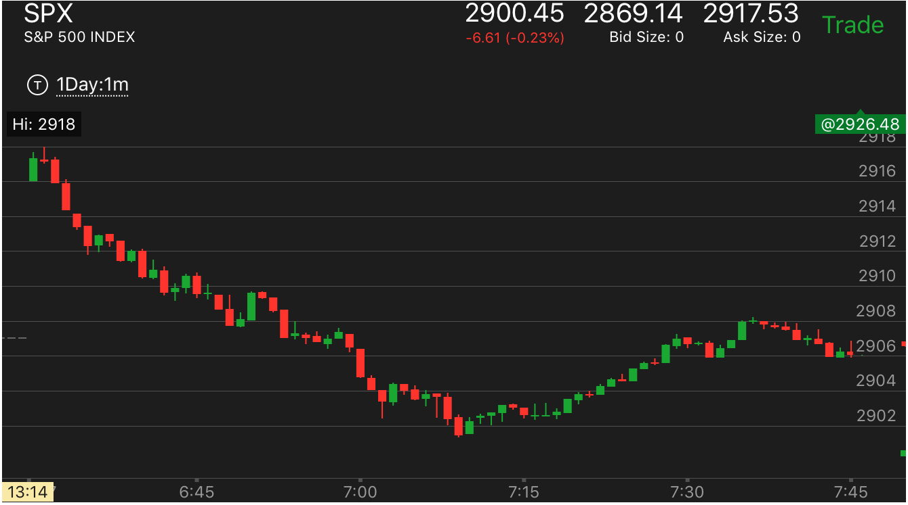
图示：这个开盘后冲高一个bar，然后不断下跌。这样就是第一浪了。这个第一浪长达10个点。未来除非发生下跌加速，
或者发生高于10个点的浪，否则它不会反转，但是有可能发生部分反转。这个走势一直到7：10反弹的时候，
都没有反转，只是产生很多转折走势，导致一定的反弹。
===========================================================================================================
- 一开盘就出现两段走势，它不一定会反转，因为不知道开盘前的情况。
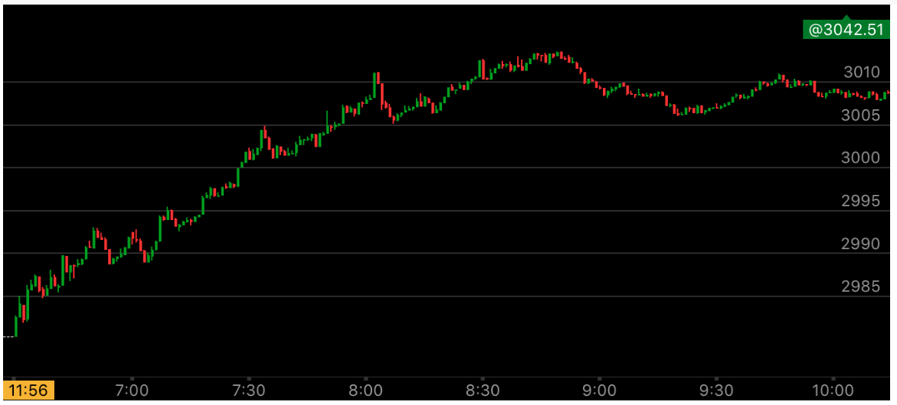
图示：这个走势一开始出现了两段上涨。但是它是一开盘就上涨的，所以不能确定就是反转走势。
也许它开盘前就在涨了。结果这个走势果然没有反转，而是填补真空后，继续上涨。
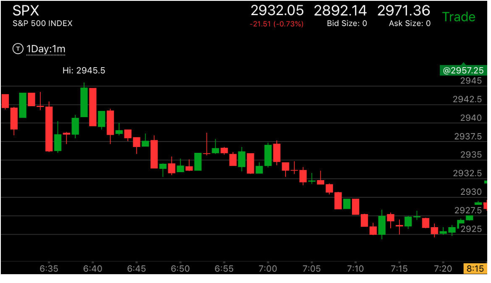
图示：开盘出现了两段下跌走势，然后快速反弹，创新高。这个可能是反转后的第一浪，
但也可能是下跌过程中出现了两段下跌后，大幅的反弹。因为不知道开盘前的情况，所以应该等待。它如果不断的创新高，
说明开始上涨，如果开始创新低，说明又恢复下跌了。在这个走势中，它在6：46创新低后，走平20分钟后，大跌。
只要看到它创新低，说明这个是前面的两段下跌是更大的跌势中的一个波浪，它被一个上涨浪抵消后，继续下跌。所以一定会
创新低的。
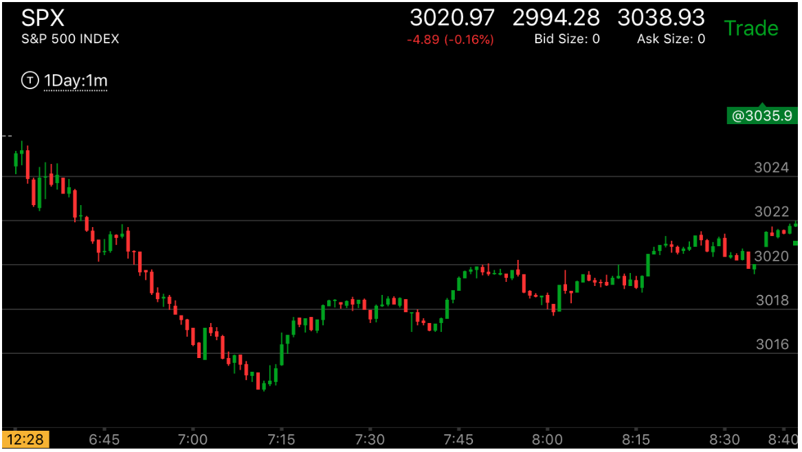
图示：开盘2分钟，大跌，快速拉回，然后缓慢的下跌。6：45的时候，它再次下跌的幅度
超过了前面第一浪的下跌。但是这个其实不是两段走势。因为它太慢了。这样就变得比较模糊。应该继续等待。等到有反向加速，
或者有三段走势才可以。这个走势直到7：15才出现了三段走势。反转了。
===========================================================================================================
- 开盘后大幅冲高，然后长时间震荡，震荡中出现了两段下跌走势。这样就确认了上涨的走势

图示：第一分钟大幅冲高，然后后面出现了两段走势下跌。这样就确认了升势。
===========================================================================================================
- 开盘后趋势的建立，应该是较大幅度越过某个点，创新高/新低后，再拉回，形成在关键点试探的走势后。
这样就建立了趋势，如果只是刚刚创新高，新低，就拉回了。那么这个反而是相反的走势
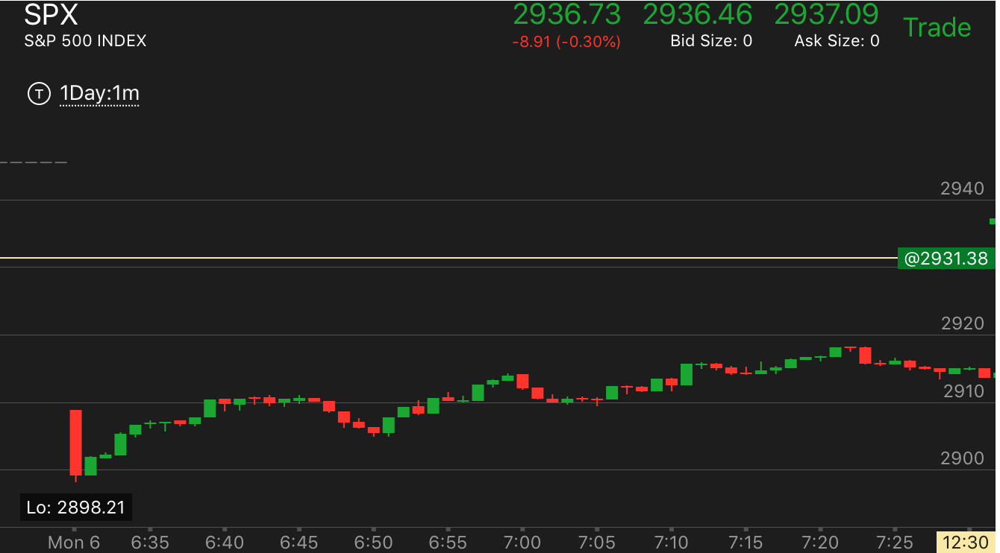
图示:
1. 这个走势，它一开始就大幅低开了接近50多个点。而当前处于牛市。所以不可能一开盘就跌这么多。另外，它的第一个bar跌幅超过10个点。可以说非常的大。
光从这两条就可以判断，它会涨了。
2. 6:40越过高点，在高点走平。这个刚刚越过高点。不能确认。它回调后，越过前面走平的点，形成了下跌加速，
6：59再次越过高点，然后拉回正好停在前面的高点上，这个就是升势了。这个走势拉回的很准。
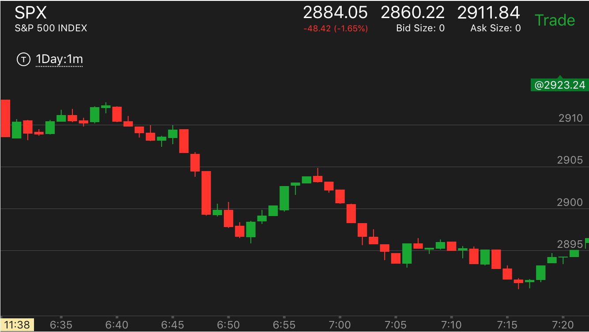
图示:
1. 这个走势6：50创新低后，拉回，回调点在2904附近，其实并没有全部回调。这是因为它一次下跌的幅度很大。
真空也只是部分填补。
2. 这个走势开盘后，大跌，反弹，但是没有创新高，再次走低。6：44它创了新低后，立刻拉回。从相对论判断，它下跌缓慢比刚刚开盘的bar要慢的多。所以一定会低于开盘点的。
而且它创了新低。很快拉回。说明处于跌势但是没有到达底部。应该在它拉回的时候，就立刻做空。不要去寻找拉回的最高点。它一定会低于这个前面的这个点的。
3. 6:45下跌的时候，它在2905开始加速下跌。未来填补真空，就在这个位置填补。而反弹做空也应该在这个位置做空。
===========================================================================================================
- 一开盘就连续上涨或者下跌，这个不能说就是第一浪的长度，因为可能开盘前就在下跌或者上涨了。
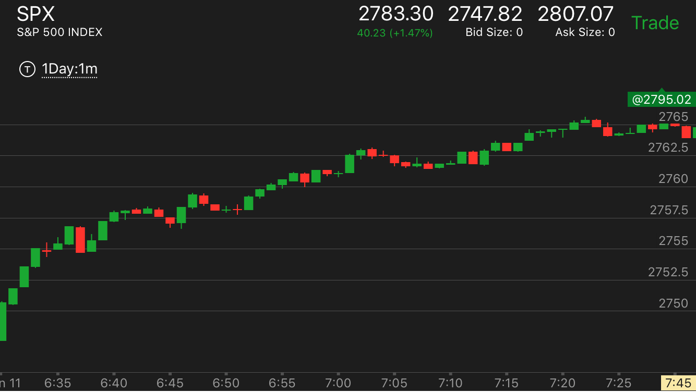
图示：一开盘就连续上涨，6：38快速回调一分钟，然后再次缓慢上涨。说明它会继续上涨。
它的第一浪很大。未来也不容易反转。或者未来要出现上涨加速才会反转。

图示：开盘后，出现了第一浪很大，然后不断上涨。6：45出现了一个小的两段走势。
到了7：45这个两段走势被下跌的三段走势回调抵消了。要注意这个是部分反转。更大的走势第一浪并没有被反转。
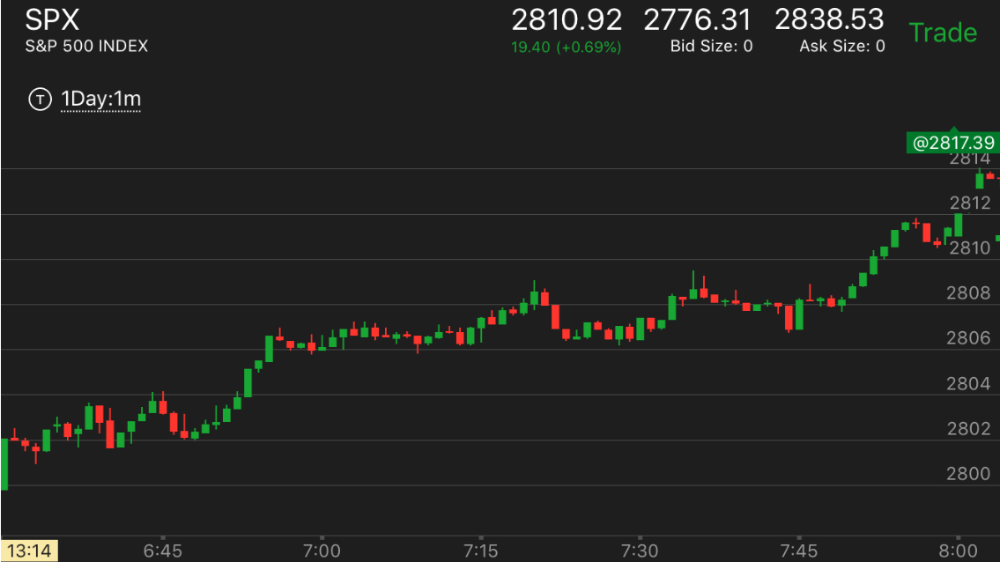
图示：开盘后第一分钟出现了第一浪，然后缓慢回调，再次创新高。再次快速拉回。
这样，就可以确定，它是处于升势，6：45的上涨虽然幅度比较大，但是很慢。所以不会反转第一浪走势。它又经过长时间的
震荡后，它自己的上涨也被抵消了。
===========================================================================================================
- 一开盘出现两段走势一直不反转的样子。这样会大跌/大涨，虽然看起来是很强的第一浪
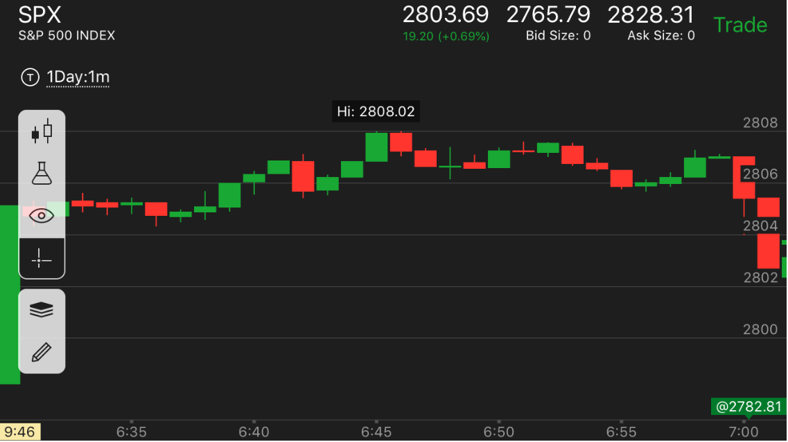
图示：第一分钟大涨，走平后，继续上涨，6：39出现了两段上涨走势。这个走势一直不反转，
后面15分钟一直高于6：39的起点。从另外一个角度看，它出现了 走低，反弹不到高点，走更低的走势。应该立刻做空。它后面大跌。
===========================================================================================================
- 开盘后，出现了两段走势后，没有反转，又出现了反向的加速走势。这样就彻底反转了

图示：刚刚开盘，已经出现了一个小的两段走势。6：33是第二浪。
但是它没有反转，6：45再次冲高，幅度和前面第二浪差不多。下来后，7：00再次冲高，这样形成了加速走势。虽然它在
高处停留时间很短，但是已经造成了反转走势。当然，也可以在它创新低后，反弹的时候做空。
===========================================================================================================
- 开盘后，不断发生跨越，然后某个时候，不再跨越，走势反转

图示：开盘后，不断下跌，每次下跌都形成了跨越走势。6：35下跌后，反弹，反弹
刚刚超过前面的走平点，继续下跌，6：50反弹不到前面高点，继续下跌，6：55加速下跌后，反弹，不再跨越。
这样走势就反转了。
================================================================================================================
- 开盘后，似乎发生了相对论走势，反转了。但是反向走势却走出了两段走势。结果继续前面的走势。
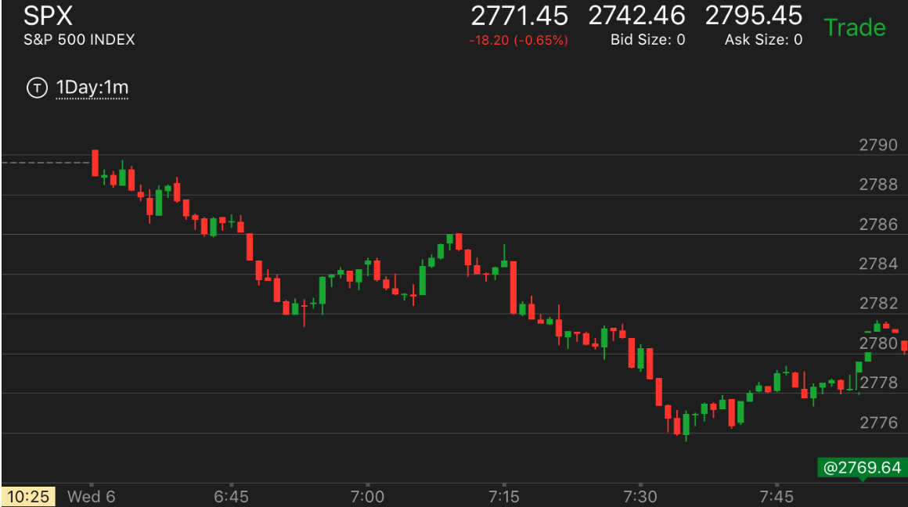
图示：6：50大跌后，看起来是反转了。因为是最后一浪。而且反弹很小。
结果它的反弹是一个两段上涨走势，填补了真空。6：57是第一浪。7：05是第二浪。
================================================================================================================
- 我经常喜欢看到一个走势快速大幅下跌或者上涨的时候，去接它的反方向，不是损失惨重，就是错过机会。一定要解决这个问题。
- 如果看到疑似的小的两段走势结束，而且出现了非常的平的走势，持续3分钟，就可以反向操作，要注意随时割肉。
这个有可能开启一个很大的走势。要注意第一个bar，如果第二个bar和它方向相反，那么这个bar就是一个走势的启动点。

图示：这个发生在刚刚开盘，属于很弱的两段上涨
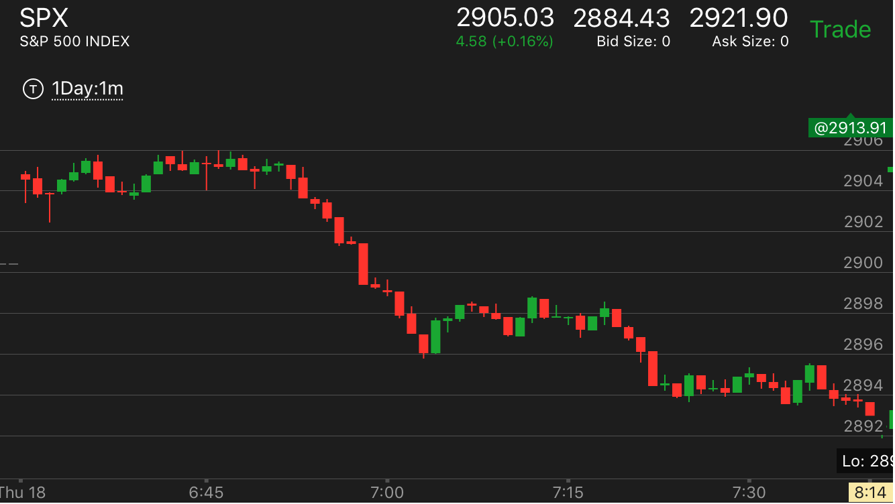
图示：开盘后，先向下，然后上涨。这样就是第一浪。快速返回后，再次上涨。没有新高。但是回到高点，一直走平。这样就是一个两段走势了。它的顶部不是很平。
但是震荡时间长。所以也构成了一个顶部。
- 判断是否有主要走势，一个主要走势建立需要很多时间，完全不必着急。可以等开盘后一个小时以上
- 如果没有主要走势，而看到一个走势很快出现第二段，那么可以在平坦的地方反向操作
- 如果一个走势不断出现了缓慢的更高点或者更低点，而且每次都回到前面的真空回调点，那么可以跟进操作。
- 如果一个操作是逆着方向来操作的，那么一定要等它走平后再操作。走平至少4分钟以上，而且符合某个走势。
- 如果开盘后，出现冲高下跌或者走低后冲高。这样的走势是不容易反转的。应该设法在它回调的时候顺势操作。如果一直没有这样的机会，那么会在某个时刻反转。
这样绝对不能提前操作，因为这样的趋势很强。
- 如果开盘后，出现连续下跌或者连续上涨，这样的走势也可能很强，需要等待它出现了两段走势，不能看到走平就以为要反转了。一定要等它真的开始反弹后，顺势操作。
盘中交易
- 判断是否有缓慢的积累走势，如果有，那么它不容易反转，或者全天都不会反转。如果没有，那么一般的规则都适合，比如两段走势，等等
- 如果是两段走势，那么观察每个走势的启动速度。判断它的结束。如果没有把握，那么就等它出现第一浪后，
回调或者走缓后操作第二浪。
最后90分钟交易
- 这时由于吃饭或者运动，可能注意力不集中，很容易被直觉影响。如果条件不允许，那么就不要操作。
=====================================================================================================
快速运动的走势的操作方法
- 一定不要硬接这个走势，要等它出现了转折，然后再做。可以追赶。有时候需要追赶，有时候需要等它回来。但是无论如何，都比半空中接它好。
不要怕错过机会。大部分的时候，我提前操作都被套住了。而它上涨或者下跌到达后，运动非常的缓慢
- 但是有些时候，如果快速的双底或者双顶走势，也确实需要提前放个单子来接它。这时就需要判断，到底是那种走势。
- 这个也是一种反直觉的走势，它快速运动，让人有冲动去反向操作它。
=====================================================================================================
盘前交易
- 如果盘前出现了一个大幅下跌，或者大幅上涨，然后走平很久。一直到开盘都在这个附近徘徊。这样就可以提前操作。这样的走势通常会一开盘就不断的上涨或下跌
- 如果盘前出现了要跌或者要涨的走势，但是一直在运动，不好抓到极点。应该等开盘后，走出一个走势为止，利用盘前的走势来界定它的运动范围。
- 如果盘前没有特别的动作，就等到开盘后再说。
=====================================================================================================
不要总是期待一个走势会反转
- 只要一个走势没有结束，就可以去追赶
- 有时候有回调，但是也有时候，因为一次性运动幅度不大，就走平，这时就不会有回调。可以直接追赶。
- 如果看到一个走势没有到达极限，而一直缓慢运动，那么不要期待它会反转。它可能永远也不反转，或者很晚才反转，即使反转也是有限的反转或者就变成垃圾走势。
- 应该尽早加入一个运动的走势。当然也要尽量学会判断，看懂一个走势没有反转，仍然在运动，根据真空的位置，或者一个走势位置，判断它是否到达了位置了。
- 不要担心它会回调，也不要去赚回调的钱，而是紧紧拿着，直到反转为止。
- 如果有目标，反转的常常发生在越过目标后，发生反转。
=====================================================================================================
总的操作原则
- 对于确定的，有目标价格的走势，一定要紧紧拿着，如果是顺势，它一定会超过原来的高点/或者低点的。不要一看到打平就卖掉
- 对的时候，要尽量拿着，直到发现走势转折为止。不要担心利润的消失，不要占小便宜，不要想着捞一把。只赚该赚的钱
- 错的时候，一旦打破自己的假定，应该在它回调的时候止损。然后继续观察。不要看到更好的价格就不管不顾的去做。如果方向错误，当然价格越来越好
- 不要去接新低或者新高，在运动范围内，是可以接的，如果认为它会运动到范围内。尽量用追赶的方法操作。
=====================================================================================================
仓位开启原则
- 平坦原则：要在平坦或者缓慢的地方开启仓位；
- 追赶原则：大盘在反向填补真空，或者在逆势中出现了一个走势，这时经常出现最高点只有一分钟
然后快速运动的走势。这时应该追赶。要对点数有所估计，有时候大盘运动很慢，这时真空连一个点都不到，
有时候很大，真空可能有4，5个点。要看前面大盘运动的速度和幅度。
- 第二浪追赶原则。有些走势，要么第一浪太快，要么第一浪没有发现，出现了第二浪，这时也应该去追赶操作，而不是放弃
- 追赶预测原则：有些走势，从极点开始运动很快，过会又回到极点附近。这样总的来看也不快。这时也可以跟进操作。
- 如果有目标价格，估计大盘可能在什么地方停止，而且大盘出现了5浪等走势，那么可以追赶操作，或者逆势操作

图示：
- 6：50大盘开始快速下跌，然后走平几分钟，再次下跌，反弹后，走平几分钟。
这样可以确定，它一定会超过快速下跌的开始点。但是因为更大的走势是跌势，所以可能刚刚超过一点点。
而且它的上涨方式是5浪上涨。会很快衰竭。所以可以预先放好单子。但是也可以追赶操作。
- 反方向原则：如果发现反方向有平坦的走势，那么很可能反方向才是正确的方向；
=====================================================================================================
仓位关闭原则
- 依据止损原则，看到不断扩大的损失后，止损
- 忽略小的震荡，如果有目标价格，而且目标不远，那么就一直拿住。如果目标价格很远，那么每次比较大的运动后，走平的时候，可以平仓，然后等待回撤后，
再次开仓。
=====================================================================================================
回归基本分析
- 如果一个走势，没有出现大幅加速，而就开始快速回调，那么这个走势并没有结束。它只是在填补真空。然后会继续运动。
但是这个也要从开盘的状况来识别。经常出现开盘是跌势，但是却创新高的情况。这样的情况，就不需要加速也会反转。因为本来就是跌势，
开盘升势，但是创新低的情况也是一样。
- 如果一个走势出现了末端加速，那么就是一个走势的结束。它的后面的走势就是反向走势，而不是回调
- 如果一个走势出现了两段或者5浪走势，那么会反转或者回调，加速走势不是必要的，以及更大的走势的趋势
- 相对论的应用
=====================================================================================================
相对论的应用
- 相对论在每个尺度上都可以运用。在估计整体跌幅/涨幅，以及决定小的走势的方向的时候，要考虑相对的速度和时间。
- 考虑速度的时候，第一个bar不一定是决定因素，如果有连续的上涨或者下跌，应该把这个连续的上涨和下跌时间考虑进去
有可能出现第一个bar很大，然后走平很久，结果总的看，时间很长。
=====================================================================================================
紧紧的拿住
- 因为无法预测一个走势如何开始，也无法预测一个走势如何结束，只有紧紧拿住才可以完全掌握走势。不要贪心，做好一个走势就可以了。不需要完全的做走势内部所有的波段
除非碰到明显的反向走势的发动。来回交易，只会让自己心理上暂时好受一些。然而却让自己错过机会后心理失衡。这个其实也是直觉的一部分。只有克服了才能赚钱
- 区分积累走势和震荡走势。对于出现了积累走势，一定要紧紧拿住。而没有积累走势的情况，则只有看到明显的临时转折也可以操作。
- 也要用自己的判断来有一定的灵活性，如果出现大幅的运动后，走平，即使没有到达极点，也应该先出局，再观察。
- 注意积累走势的作用，如果出现积累走势，那么大盘即使冲高走平也不一定反转
- 这个原则的关键在于，即使价格不好，也应该紧紧抓住。只要自己判断正确。除非自己确实错了。而不是打平就跑。
- 顺势操作的时候，价格不好。不要害怕，也不要看到打平的机会就逃跑。而是确定目标价格。或者看到加速走势。
要想到就是巴菲特，也经常价格很差。但是也照样赚钱。
- 关键在于是顺势操作，如果是逆势，那么很可能是错误的。这时不能坚持，而是要看到好的价格就止损或者逃跑
- 但是如果是逆势操作，但是看到出现了一个把握很大的转折走势，也应该紧紧抓住，而不是止损或者逃跑
- 要严格区分暂时的不利和完全的方向错误。完全的方向错误，大盘会不断的回调填补真空然后继续运动。这时应该割肉。反向操作。
而暂时的不利，则应该紧紧拿住。
=====================================================================================================
无偏见原则
- 大盘出现了一个走势，以为它一定是某个走势，不等它出现了确认，就提前进入。结果往往发现自己错误。
- 大盘一直没有填补真空，就以为它可能不会填补了。结果大盘最终还是填补了。
- 看到某个走势，和从前某个走势类似，以为后续走势也一样，结果忽略对具体走势的观察。一旦不一样，就会应对错误。

图示：
- 开盘出现两段上涨走势后，我以为和原来一样，很快出现一个两段大跌走势。
结果它跌幅很小。然后在小的见底走势的驱动下，创新高。反而反转了整个升势。而我以为大盘成为了升势，慌张下割肉。
- 11：30出现底部加速后，我以为和原来一样，出现了一个准备的大涨走势后， 再来一个两段走势。结果它反而先出现了两段走势。
我以为升势结束，卖掉后，做空。结果却是两段走势来回调，回调后，大涨
=====================================================================================================
应用方法
- 相对论方法：这个方法要小心识别第一浪和第二浪。只有第二浪出现快速的上涨或者下跌，才可以应用。如果第二浪速度很慢，那么也不能用这个方法。
- 顶部或者底部加速：这个模式有大有小。刚刚开盘或者反向走势的时候，这个模式很小。只有几分钟。
而要反一个更大的走势，需要一个小时的走平。或者更大幅度的单向运动。所以一定要有耐心，等待足够的时间。
- 两段走势理论：这个走势可能有很多嵌套。它也可能从属于更大的走势。或者它本身就是最大的走势。各种情况都有。
- 主要走势理论：一个主要走势也可能是两段走势，它不容易反转，不要轻易反向操作它。要等待足够的时间，而且等它出现了顶部或者底部加速，或者永远不出现
- 真空填补和关键点： 这个和前面的几个走势相辅相成。如果要给走势不填补真空，那么会变成底部加速或者顶部加速。